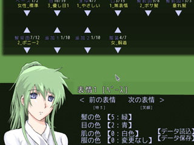

シルバーセカンド開発日誌
2009年04月
■
2009-04-24 (金) 顔合成機能とはやぶさ▼
最近、夜から明け方まで（※誤字じゃないです！）、
家のド真ん前で舗装工事中で泣きそうなウルフです！
こんな体験初めてなので絶賛寝不足中です。作業が進まない！
寝られないので午前3時にこの記事アップしてますよ、もうアホかと。
もちろん工事前に、お詫びの手紙がポストに入ってましたけど
工事してる人も目の前に住んでるも大変だぜーハハッって状態です。
それでもシルフェイド学院物語は、シナリオ作成や
顔グラフィック作成は少しずつでも進めています。
合成パーツによる顔グラフィック作成システムも作りましたので
これでモブキャラ作成だって大丈夫！

※いま間違えてるのに気付きましたが、左前だと死に装束です。
↑これは顔合成作成機能。ゲーム上で動作します！
色々パーツを選んでデータ保存すると、
テキストとして組み合わせ情報を出力することができます。
表情も最大10種まで設定可能！髪の色や肌の色も変更可能！
それにしても、普通の顔一枚だと何とも感じないのに、
表情を色々と並べて見ると、途端に魅力的に思える気がして不思議です。
シル見の頃は絵が下手だったために表情でごまかしてた感がありますが、
後になってみれば、キャラクターをいろどるのは単体の綺麗さより、
多様な表情にこそあるのかもしれません。
合成顔でも色々表情が作れるよう、パーツを追加中です。
気になったコメント返信はまた次回。
プロトタイプ動画へのたくさんのご意見ご感想、ありがとうございました。
ちょっと今回は脱線して、私の個人的趣味のお話でも。
大阪市立科学館がオリジナルで作った探査機はやぶさのCG映画、
今これに興味シンシンです！にわか宇宙技術ファンな私にはハァハァもんですよ。
↓ここから「はやぶさ」のお話 ▼追記を開く▼【予告編PV （公式の人がアップしたものです）】
公式サイト http://hayabusa-movie.jp/
「はやぶさ」は、電気推進のイオンエンジンを積んだ小惑星探査機で、
小惑星のサンプル（カケラ）を採取するミッションを遂行中です。
いまはすでに小惑星イトカワへの着陸ミッションを終えて採取動作を完了しており、
地球に帰ってくる段階にあります。採取できたかどうかは分かっていません。
公式ブログによると、現在位置は地球から2.4天文単位(3.6億km)のあたりだそうで、
光でも片道20分かかる位置。すげぇえええどこまで行ってんの！ですよホント。
でも今は姿勢制御すらままならないくらい、満身創痍でボロボロになってます。
ネットじゃ「サンプル取れてなくてもいいから頑張って地球に帰ってきて」、
なんて暖かい言葉を見たり、一方ではやぶさ運営のブログでは
「はやぶさ君は今週も元気に航行中です」なんて微笑ましかったり。
超絶技巧を駆使してギリギリ飛んでるだけな気もするけど良いポジティブ！
この計画は予算が超カツカツ極小らしいのに、それでありながら
何とか成果を出そうと史上初詰め込みまくりのはやぶさを送り出したりしてて、
お金が少なくてもやることやっちゃえるのが日本人の底力か！スゲェ！と思います。
「アルマゲドン（映画）の製作予算よりはやぶさのプロジェクト予算のほうが安い」
なんて笑えるような笑えないような書き込みもネットで見かけました。
もっと宇宙科学方面にもお金を使ってくれたらなあ、とも思いますけど、
逆に予算は減らされる一方だそうです。JAXAも大変なんですよ。
（JAXAは「はやぶさ2はロケットを無償で提供してくれるとこ見つけてね」と指示）
[参考ニュース(ｱｰｶｲﾌﾞ)]
でも海外からの評価はかなり高いみたいで、
「はやぶさ2の打ち上げタダでやってあげるよ！」という
イタリア宇宙機関からの提案があって、計画のお話が進んでいるようです。
もちろんイタリアの観測機器も載せるでしょうけれど、
よその国の探査機をタダで打ち上げてあげるなんて太っ腹な話ですよ！
粋なところは、さすがイタリア！頼りないってよく言われる国ですけどありがたい！
きっと、「普通ならミッション失敗扱いなほど機体がボロボロになってても、
創意工夫で何とかミッションを遂行してきたスタッフ」の
すごい技量と執念にも期待しているところがあるのだと思います。
と、そんな感じで世界的に見ても凄い結果が出せてるのに、
日本でのニュースでの扱いがかなり小さいのが、個人的に残念です。
ということで、せめて皆さんに少しでも知っていただけたらなと思って
ここで取り上げさせていただきました。 ■
2009-04-12 (日) シル学 プロトタイプ動画！▼
S「悩みがあるんです。うちのパーティー構成のことなんですが」
DJ「へえ、どんなパーティー組んでるんだい？」
S「ホビット4人」 DJ「ホビット4人！？」
S「全員むしょｋ…いやシーフかな」
DJ「バランスの悪いパーティだなあ、ところで君の名前は？」
S「サムです」
DJ「指輪捨てに行くの頑張ってね！フロド君によろしく！じゃあ次」
S「あ、ちょっ」
それはいいとして、色んなゲームの発想の元ネタになってるらしい
テーブルトークRPG「ダンジョンズ＆ドラゴンズ」の作者様の一人、
デイビットさんという方が亡くなられたそうです。
HPと呼ばれる概念ができたのはこの作品が最初だそうで、
そう考えると、とても偉大な存在です。ご冥福をお祈りいたします。
で！
しばらく開発に集中したいので、
皆さんにはでっかいネタを持ってきました！
これが『動いている』シルフェイド学院物語だぁぁぁぁー！！！
HQボタンを押すと高画質で再生できます↑
最後のはもっと普通にするつもりだったんですが、
冗談で書いたの忘れてそのままエンコードしちゃったので
恥ずかしいけどそのままにしておきます。
動画って修正するのが大変なんですよ。
ススキノさんは、動画撮影中に「ヤッベ名前考えてねえ！」
ってことであわてて付けた名前なので深い意味はありません。
他にもアイコン作りかけとかヘルプがヘンとかお見苦しい点がありますが
正式版ではちゃんと直しますので！さーて開発頑張るぞー！
動画内容は議論･妄想のタネとしてご利用いただければと思います。
以下はシル学の無茶振り反応ご意見。
可能、不可能問わず、ご意見や妄想、色々お寄せください！
＞無茶振り待ちらしいので無茶振ってみると男性キャラでも
＞ミスコンで優勝する可能性とかがあったらおもろいかなーとか。
＞努力次第もしくは天性で。あと一見さんや久々プレイの場合の為に
＞キャラ名鑑機能とかあるとうれしいかも出典が何々で～とか出るやつ。
男キャラでプレイしてるときに「ミスコンに出る」の選択肢が出る時点で
何かのバグかと思ってしまいそうです！！
ただ、魅力関連イベントも作りたいので
せっかくなら作ってみたい気もします。
キャラ名鑑の発想はなかったです、覚えてたらぜひ入れたいと思います。
でも今オマケ要素入れるどころじゃないです！
8月までに完成するのかコレー！？
＞愛の力で必殺技を生み出す、もしくは失恋をばねに
＞必殺技を生み出す燃える王道展開を希望！
前者はよさそうなんですが後者は「嫉妬ファイアー！！」
とか言ってそうでアレです。でもちょっと素敵な感じがしてきました。■
2009-04-03 (金) ウディタ高速化・一段落▼ミサイル報道見てると今の日本どう考えても戦争状態。
ていうかエイプリルフールの午前中に
「エイプリルフールは午前中までだよ」
って言うのやめてください！クレタ人は嘘つきですか！？
あ、ちなみに誕生日に誰にも祝ってもらえなかったのも嘘です。
家族と戦友から一言頂きました幸せ者ですよ。
シルフェイド学院物語ですが、やっぱりいじったそばから
内容が反映される段階になると凄く楽しいです！
データを増やしやすいようにと、色々考えて時間かけて
下ごしらえ的に作ってきた部分が今になって効いてきました。
これまで作ってる最中は目に見える変化がなくて、
「なんでこんな時間かけて汎用性上げなきゃいけないんだ……」
とか思ってましたが、その汎用性のおかげで
後半開発に入ってからのペースがハンパじゃなく向上！
ガンガン行きますよ！
特に「パーツ合成」構想は、
戦闘グラフィックのようなデフォルメキャラには
猛烈な効果を発揮していて、膨大なキャラが登場するゲームにおいて
全員分の戦闘キャラ画像を作りやすいという点が便利すぎます。
【最近の進行状況】
3/27 「スキルの強化」処理の基本処理を作成。
3/28 戦闘システムの描画機能を洗練、
アルバートのバトルグラフィック作成
あと銃の射撃モーションも裸ポーズだけだけど完成！撃つと薬莢飛ぶよ！
3/29 戦闘の描画方法を大幅改革。服とベース部分（裸）をバラして、
重ねて表示することで、肌の色変化に対応。黒い人や緑の人もＯＫ！
戦闘画像用のパーツを色々追加 ポニーテールとかナダ・セトヘアー追加。
3/30 合成パーツを増やしてNPCモブキャラを5体ほど追加
3/31 頭痛で作業が進みませんでした
4/1 「自由行動」処理の最終調整や、ウディタのプログラム修正など
4/2 ウディタのバグ取り＆プログラム修正続行。
ピクチャ処理を高速化しようと頑張ってみたものの、テキトーに作った
力ワザの方が格段に早くて泣く、ボツ。そして力ワザを正式採用。
ということで、ウディタの高速化はとりあえず一段落しました。
「夢柱（ウディタ製弾幕シューティング）」がVer1.10時の
3倍オーバーの速度で動く（かも）というレベルまでは向上しています。
変数操作に至っては、1万回あたり32msかかっていたのが今や8msに！
100msあたり12万回計算できるようなので、
以前の結果のRGSSの45万回にちょっとだけ近くなりました。
が、実はループ内に置かずに普通に変数操作を並べると、
100msあたり27万回も計算できることが分かりました。
回数付きループ処理自体でかなり時間を食ってたようです。
ということで、今度はRGSSとウディタの両方に対し、
「for（回数付き繰り返し）ループ内に10個の変数操作を並べて」
処理時間を計測してみました。結果を比較すると以下の通り。
【100ミリ秒あたりの変数操作処理回数】（ループ内に10個の変数操作文）
RGSSスクリプト $A = $A + $B 68万回
ｳﾃﾞｨﾀ変数操作 ｺﾓﾝ0=ｺﾓﾝ1+ｺﾓﾝ2 27万回
変数操作に限れば、RGSSの2/5くらいの速度が出るようです、
バンザーイ！
ただ、変数操作だけを速くしても、
実は全体として見るとあんまり速くならなかったので、
変数操作だけでなく自作システムで散々使いそうな
DB操作・ラベル処理・ピクチャ処理・ループ処理なども高速化しています。
その血と汗と涙の結晶がコレ↓！！！動画撮影用アプリケーション以外
何も立ちあがっていない状態で、「Game.exe」だけ入れ替えて
従来版と高速版のイベント処理時間を比較したものです。
ちょっとネタバレ気味ですが、ラクにチェックできる動作が重くなる状況が
ここしかなかったものでして、どうも申し訳ありません。
実験環境はCore2Duoの2.5GHz（1CPUしか使いませんけど）です。
結構速くなったと思いますよ！これまで1GHzのPCで遊んでいた人でも、
3～4GHzのPCで遊ぶのと同じくらいスピードが出ると考えれば
高速化って大事だなあってちょっぴりシミジミできます。
以下は気になったコメント。 ▼追記を開く▼＞あれ、出演予定に見キャラが少ない…？
＞見の主要キャラのエシュター・ガゼル・シーナ・セトあたりは
＞まだ未確定なんでしょうか、と出演希望
きっと出ますよ！！といっても物語の需要に応じて出演させないと、
「出たはいいけど出番少ない」とか「目立たない」とか、
かわいそうなことになるので、
出すならしっかり出番や役割を考えたいところです。
全部オリジナルキャラで作るなら、そういう問題もないんですが、
既存キャラをメインに使う開発ってのは始めてなので、
その辺りが色々難しいです。
見聞録キャラに比べると、幻想譚キャラはまだ掘り下げきれていないので、
そういう意味で使いやすいところがあります。
個性の薄いキャラが二次創作で多用される理由がよく分かりました。
＞更新お疲れ様です。NPCの自動成長機能、とても面白そうですね。
＞ところで成長幅は各キャラごとに固定値でしょうか。
「最終パラメータ」と「初期成長度」、「成長率」が設定可能なので、
ある程度は自由に設定できます。
一部のキャラは初期パラメータのまま全く成長しない、とか、
最初は弱いけど強くなるのがメッチャ速いとか、
最初割と強めだけど成長率は遅いとか、そういう設定も可能です。
＞キャラは総勢何名くらいでる予定ですか？よかったら教えてください。
えーと……出来た分だけ！！
合成顔キャラのNPCもいっぱい出るので、
キャラ数だけはいっぱい出る予定です。
いざとなったら既存キャラを合成顔で再現できますし。
＞モノリスフィアのキャラはシルフェイド系列じゃないので
＞やっぱり学園には出ないんでしょうか？
モノリスフィアもシルフェイド系列なので出ます。
＞正式版のウディタで作るなら、シル見のバグは直ってそうですか？
ツクールの都合で直せなかった問題も直せるハズです。
むしろ、もっと操作をラクにしたい考えです。
マウス操作できるようにするとか。2009年04月
Copyright © SmokingWOLF / Silver Second
 カテゴリ: シル学
カテゴリ: シル学 カテゴリ: シル学
カテゴリ: シル学